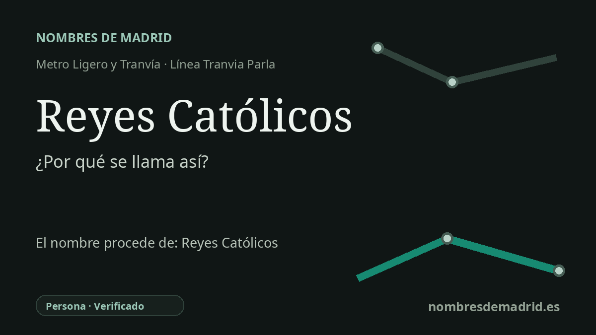

Publicado el · Investigación de Nombres de Madrid · Cómo verificamos cada origen · 6 fuentes consultadas
Respuesta rápida
La estación Reyes Católicos toma su nombre de la calle Reyes Católicos de Parla. La vía recuerda a Isabel I de Castilla y Fernando II de Aragón, la pareja real a la que el papa Alejandro VI concedió formalmente el título de Reyes Católicos en 1496.
La historia del nombre
La estación Reyes Católicos recibe el nombre de la calle donde se encuentra: calle Reyes Católicos, 37, en Parla. El Consorcio Regional de Transportes de Madrid sitúa allí la parada, y el inventario municipal de Parla identifica la calle Reyes Católicos como una vía pública comprendida entre Reina Victoria y la calle Felipe II.
El nombre alude a Isabel I de Castilla y Fernando II de Aragón. No se trata de una sola persona, sino de la pareja real cuyo matrimonio, celebrado en Valladolid el 19 de octubre de 1469, vinculó las casas reinantes de Castilla y Aragón. Isabel accedió al trono de Castilla en 1474 y Fernando al de Aragón en 1479, formando una asociación dinástica que la historiografía española ha considerado fundacional.
Su reinado se asocia a hechos decisivos: el final de la guerra de Granada en 1492, el fortalecimiento de la administración regia, la política religiosa incluida la Inquisición y las expulsiones o conversiones forzosas, y el apoyo al primer viaje atlántico de Colón. Por eso el topónimo tiene una carga histórica notable, aunque conviene formularlo con precisión: el matrimonio unió coronas y políticas, mientras que la unificación jurídica e institucional de España fue un proceso mucho más prolongado.
El título tiene además un anclaje documental concreto. Un registro catalográfico de la bula pontificia describe cómo Alejandro VI concedió a Fernando V e Isabel el título de Reyes Católicos el 19 de diciembre de 1496, y una ficha bibliográfica de la Universidad Complutense remite a un estudio sobre ese mismo acto. Algunas obras generales dan 1494, pero la fecha mejor respaldada para la bula solemne Si convenit es 1496.
En Parla, el nombre de la parada encaja también con su entorno urbano inmediato. El inventario municipal recoge en la zona nombres regios próximos o conectados, como Isabel II, Felipe II, Fernando III el Santo y Jaime I el Conquistador. Ese patrón refuerza la explicación práctica: la parada del tranvía tomó el nombre de la calle, y la calle forma parte de un conjunto local de topónimos monárquicos.